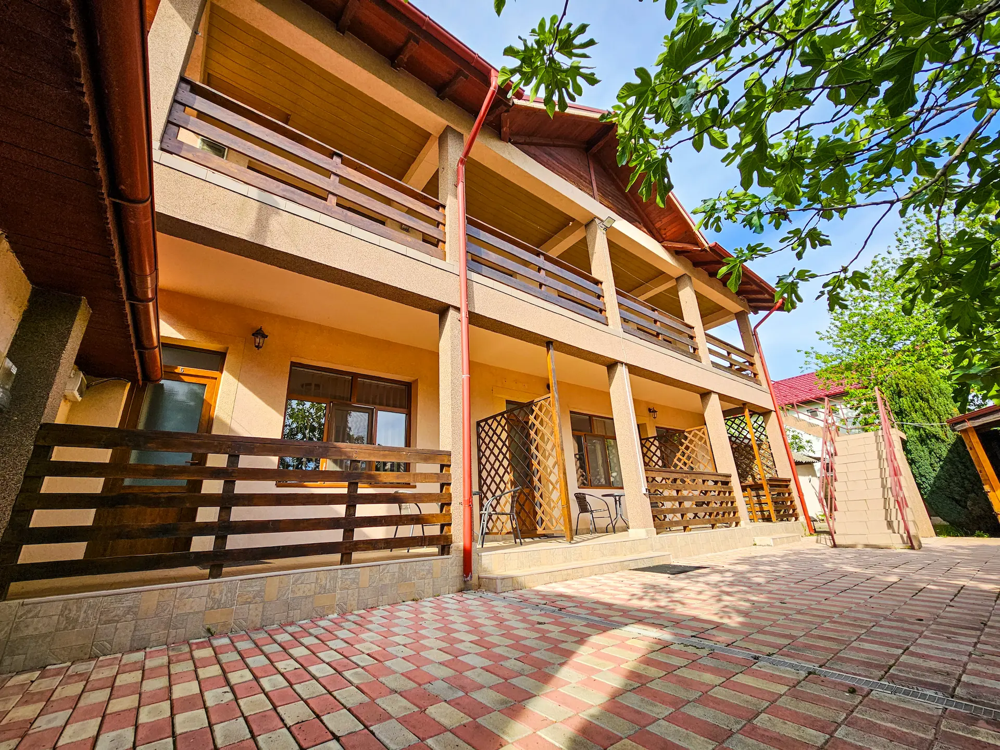
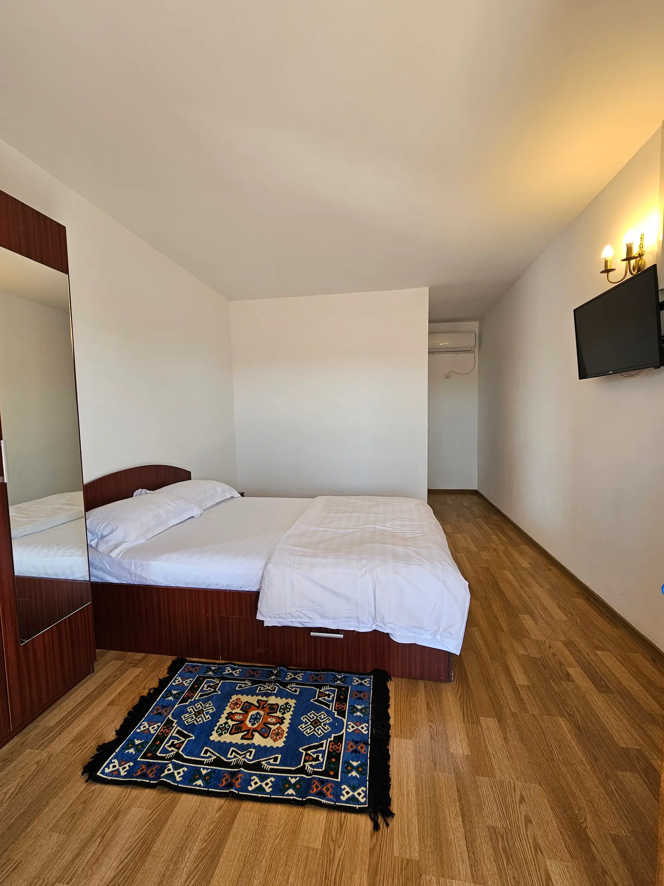
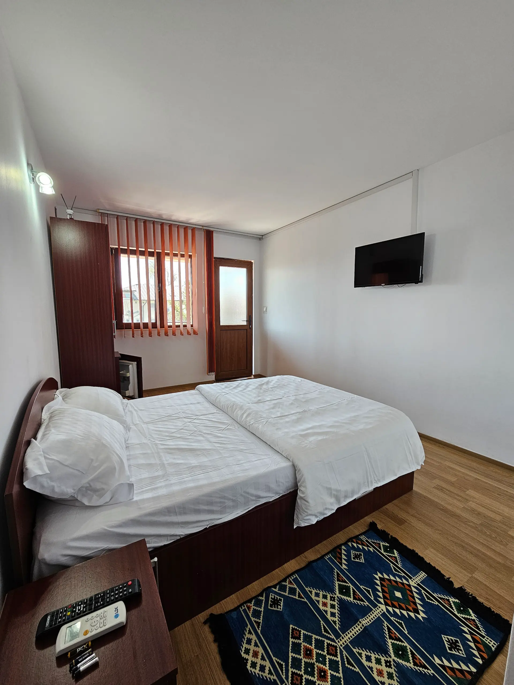
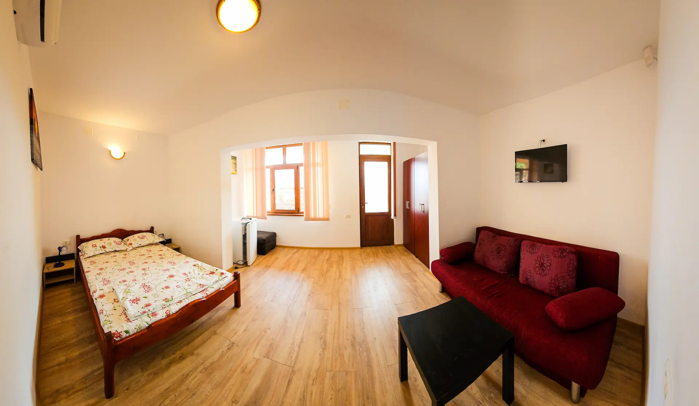
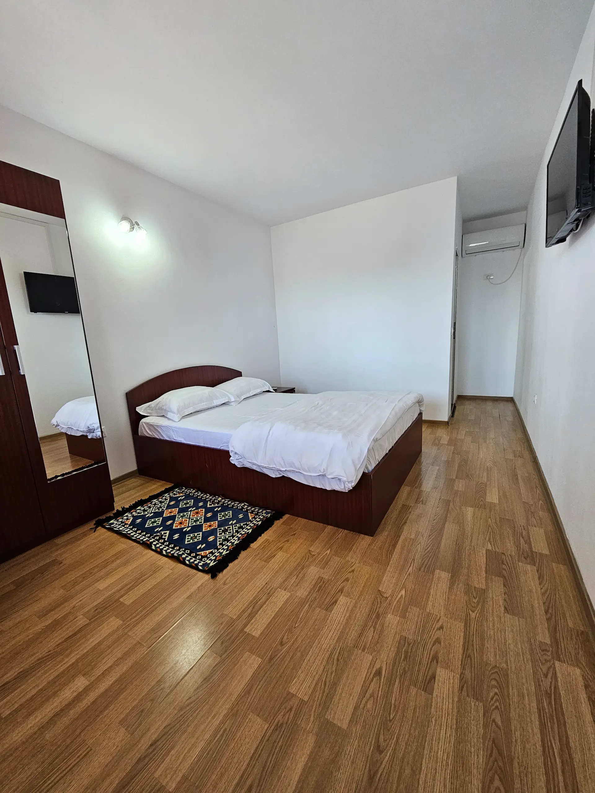
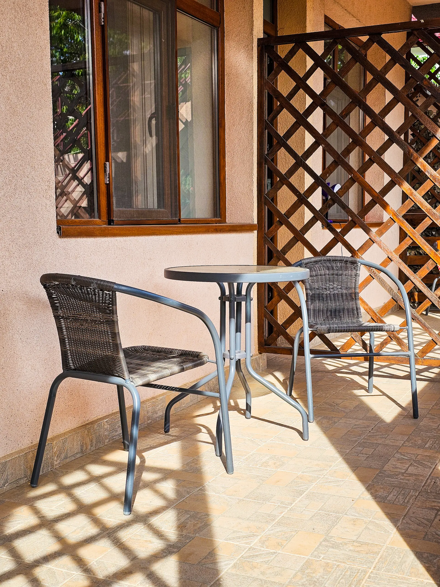
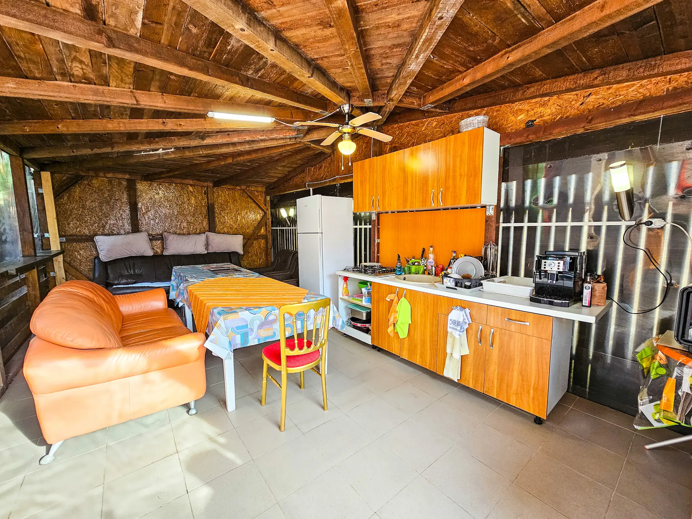
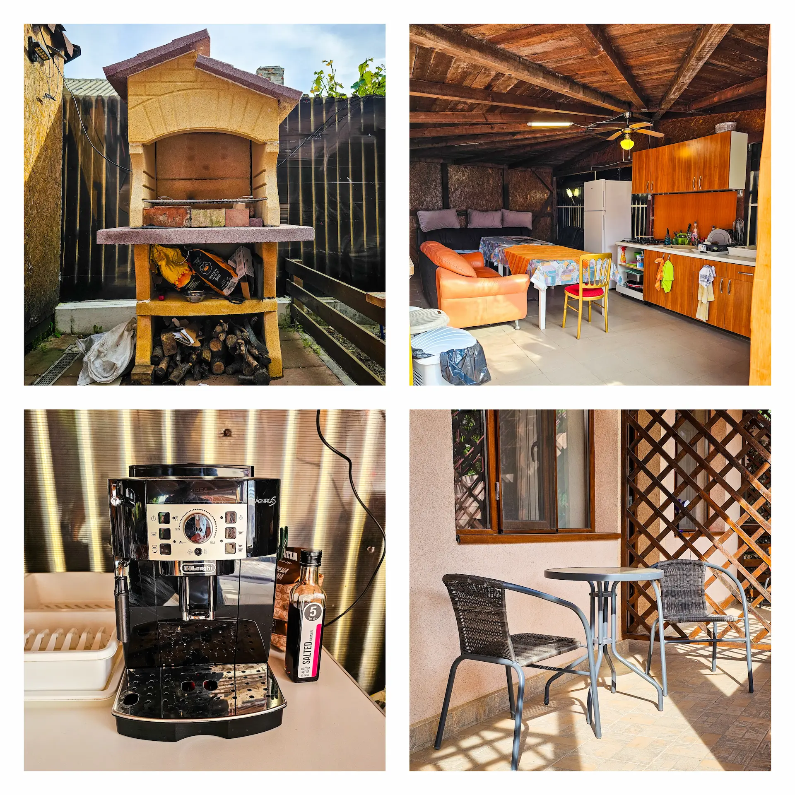
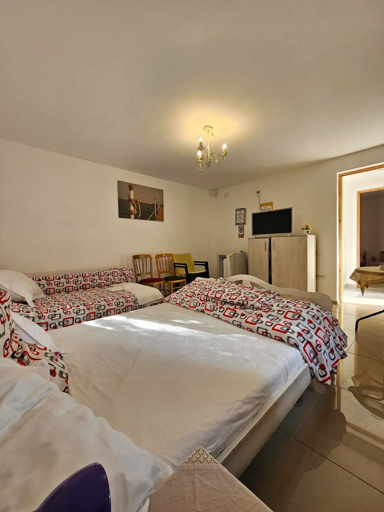

OK, o sa tratez ultima varianta a site-ului ca si V2, iar cea anterioara ca V1. 

Imi place V2, dar cred ca are niste probleme si anume, pe anumite telefoane se vede ciudat scrisul de sus, cel mare. Este prea mare si prea labartat si nu intra pe ecran (vezi atasat). 

De asemenea, in silde-ul cu poze de mai jos (cel care incepe cu <div class="gal-track" id="galTrack" style="transform: translateX(0px);">
      <div class="gal-item"><span class="gal-cap">Exterior</span></div>
      <div class="gal-item"><span class="gal-cap">Cameră</span></div>
      <div class="gal-item"><span class="gal-cap">Cameră matrimonială</span></div>
      <div class="gal-item"><span class="gal-cap">Apartament</span></div>
      <div class="gal-item"><span class="gal-cap">Cameră</span></div>
      <div class="gal-item"><span class="gal-cap">Terasă</span></div>
      <div class="gal-item"><span class="gal-cap">Foișor &amp; Bucătărie</span></div>
      <div class="gal-item"><span class="gal-cap">Facilități curte</span></div>
      <div class="gal-item"><span class="gal-cap">Apartament</span></div>
    </div>) , ar trebui ultimul slide sa fie ceva cu vezi mai multe poze si cand dai click acolo sa se deschida turistinfo intr-un tab nou, unde chiar sunt mai multe poze.

Iar slide-ul asta cu poze putem sa-l facem cumva sa putem da click pe poze si acestea sa se deschida intr-o fereastra mai mare, de unde sa putem da stanga/dreapta (la pozele urmatoare) sau x pentru a reveni? 

Caruselul de sus as vrea sa fie modificat incat sa fie Hero Page, iar apoi pozele din camere, nu poza de afara cu masa sau poza cu foisorul, ca acelea nu arata fain marite asa.
